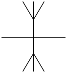

Беседа 2596 от 3877 · Беинса Дуно
Не ограничавай Божественото
Отче наш.
„Духът Божий.“
Има един процес в природата, постоянно се извършва той. У ония, които вярват и у ония, които не вярват, процесът действува еднакво. Няма една теория, която да обяснява противоречията, които се явяват в самия човек. Значи Духът щом слезе и се облече в материята, отслабва му силата. Едно дете като се роди е слабо. Да допуснем сега, че това дете е един Дух, който е бил мощен. Но щом се облече в материята, духът става слаб. Не че духът става слаб, но ония средства, с които си служи, с които разполага, са слаби. Казано е в Писанието: „Духът е мощен, но плътта е немощна“. Това, с което се облича духът е немощно. Трябва дълго време да работи човек, за да уякчи нещо в себе си.
Казвате: „Кажи ми Истината“. Истината не може да се казва никому! Истината е свободата. Щом влезеш в нея, ти си свободен. От всичко си свободен. Това е Истината. Когато хората говорята за някаква си истина, това е един факт – нещо, което е станало. Две тълкувания могат да се дадат. Кое е Истина в света и кое е факт. Че слънцето грее, това е един факт. Някои ще кажат, че това е Истина. В Истината няма никакви промени, т.е. не могат нещата да се променят. Например, днес е светло и утре да стане тъмно; това не е Истина. Ти си свободен, но изгубваш своята свобода. Свободен си – това е резултат на Истината. Ограничаваш се – значи изгубил си Истината. Тогаз кои са причините за изгубването на ония условия, които Истината ти дава? Да кажем, че си млад и след време остаряваш. Кое е онова, което те състарява? В детинство мислиш едно, а пък като остарееш, мислиш друго. Ние мислим сега за вашите убеждения. Това, в което вярвате е право. Вярвате в Бога, но имате смърт. Вие казвате: „Като се моля на Бога, Бог ме слуша“. Има нещо неопределено, един смут. Даже в ума на светията пак има нещо неопределено. Той вярва, че ще го послуша Бог, но това не зависи от него. От какво зависи тогаз да го послуша Бог? Ония, които вярват в Бога, напълно вярват, имат пълна вяра, благоугодни са. Човек, който вярва в Бога, трябва да има благост. Ти не трябва да се съмняваш в Него. Понеже щом се съмняваш в Него, тогаз Той е едно същество, което се изменя. А пък и най-напредналите същества вярват за Бога, че Бог е неизменяем. Около Него всичко се изменя, а пък той остава неизменяем.
Той е една величина, на която винаги можеш да разчиташ. Той не може да мисли днес едно, и утре друго, трето, четвърто и т.н. както хората. Вие казвате някой път, че Бог ви е забравил. Можем да извадим едно заключение, ако слънцето не грее. Някой път слънцето не грее, образува се една облачна преграда и тогаз ние не се ползуваме от лъчите на слънцето. Кое е причината за това явление? Облаците! Та има едно разсъждение, което сега трябва да го добивате. Ония евреи, които Мойсей ги учи да вярват в Бога, той им даде една представа. Тия хора, които бяха изведени от Египет, от робство, трябваше да ги учи отново как трябва да вярват в Бога. Египтяните имаха две вярвания: напредналите египтяни бяха еднобожници, а пък народът бяха многобожници. И днес е почти същото. И днес едни са еднобожници, а пък други са многобожници. Вие вярвате в едни светии. Едновремешните богове са като сегашните светии. Сега има свети Никола и други светии. Тогава ние имаме едно противоречие: В светията ли да вярваме или в Бога да вярваме. Не знаем кои са отношенията между Бога и светиите и между светиите и нас.

Сега в природата имаме един закон (Фиг. 1): Растителното царство е разделено: половината от растението има стремеж да се държи за гъстата материя, долу, за почвата. Това наричаме корени. Всеки един корен се отнася към почвата, както един клон се отнася към въздуха. Ние казваме, че земният живот е подобен на духовния. В някои неща е подобен, в някои не е подобен. В природата има един закон, че плодовете изобщо стават отгоре, а понякой път се образуват отдолу. У някои дървета плодовете са горе, в духовния свят, а пък в някои растения плодовете са долу. Корените се отличават от клонищата по какво? Горната среда е по-благоприятна, по-голяма свобода има за клонищата да се развиват. И плодовете, които зреят горе се различават от тия плодове, които зреят долу в земята.
Да допуснем, че един човек е светски: ще го наречем материалист. И той може да даде плода на някоя добродетел. И един духовен човек – да го уподобим на една ябълка – и той може да даде един плод. Тия два вида плод се различават. Следователно, плодовете нямат тъй хубави условия да узреят в земята, както могат да узреят горе във въздуха. Сега можем да извадим заключение, че като живеете на земята и тук можете да дадете плодове. Но прогресът в гъстата материя не е такъв, както прогресът в рядката материя. Аз под „рядка материя“ разбирам по-голяма разумност. Светът там е организиран. И гъстата материя е образувана отпосле. Сега това е един въпрос, който и учените хора не го знаят как е. Ние твърдим, че земята е била тъй създадена. Но ние нямаме ясна представа, че сме били при този процес, когато светът се е създавал. Писал е Мойсей: „В Начало Бог създаде Небето и земята и земята беше неустроена. И Духът Божий се носеше по повърхността“. Това е много материалистично схващане. Това е за деца. Трябва да се представи геометрически. Корените се отнасят към твърдата почва, както клоните се отнасят към въздуха.
КО. : Т.П. = КЛ. : В.
И въздухът представлява една почва, която благоприятствува. Въздухът представлява една почва, един проводник за светлината, за оная сила, която иде от слънцето. И от тая среда зависи вече какви промени ще имат растенията, какви могат да станат плодовете. Сега как ще приложите това. Какво приложение ще дадете? Вие казвате, че ще вярвате. В кого и как ще вярвате? Хубавите мисли на хората съставляват едно условие заради нас. Мислите и желанията на хората в известно отношение съставляват една почва, в която ние можем да растем по-добре. Например, майката се държи за детето, детето се държи за мислите и желанията на майка си. Но същевременно то се държи и за нейното тяло. И след като е излязло от майка си, то със своите ръце я прегръща. То не може да види нейните мисли и желания. Понякога гледа нейните очи, нейното лице и на нейната обхода и понякой път като някой философ, мисли какви са вътрешните предразположения на майка му. По нейната усмивка, по нейната обхода то гадае онова, което ще изисква от майка си. Най-първо ще погледне на лицето ѝ. Това е даже и у животните. Едно животно като погледне лицето ти, ще иска нещо. Например, иска хляб. Често съм наблюдавал котката. Тя има понятие за хляба. Има един начин, когато котката иска хляб. И ако ѝ се даде нещо хубаво – кашкавал и пр., то тя си има едно понятие затова. Тя не може да го изрази. Те си имат една обща дума: „Сладко!“ Но тия качества, с които кръщаваме сладките работи, котката ги няма. Като дете, тя иска сладко. Има различие в гласа ѝ, ще го каже мекичко. Сега в Божествените работи защо трябва да намесим и животните /като ви говоря за тях в тая лекция/. Че навсякъде са били намесени животните. Като четем Иезекиил, ще видим, че ония четири животни имаха четири образа: едни приличали на орли, други на лъвове, трети на волове и най-после, един от тия същества имал образа на човек. Ние сега от нашето морално гледище мислим, че животните седят на едно по-ниско стъпало. Техните мисли, техните желания донякъде съставляват една среда заради нас. Даже растенията и те съставляват такава среда, и те отделят нещо от себе си. Като израстне една ябълка, тя веднага ще създаде в тебе нещо ново. И когато овцата погледне на тревата, тая трева дава подтик на нея.
Бог се разкрива постепенно в нашето съзнание. И всички хора служат като едно условие, при което Бог да се прояви. Ако иска Бог да прояви Своята милост към тебе – да кажем, че ти си се разболял от един неестествен живот, не си спазвал законите и поради (това) станало някакво нарушение в тебе – ще дойде тогаз някой умен, добър човек лекар и ще те излекува. Няма да дойде най-първо някой ангел от небето. Ангелите идат в много редки случаи. Те са същества толкова напреднали, че имат ред помощници и вместо той да дойде, ще прати някои от своите помощници на земята. И напредналите хора са ученици на ангелите. Ние ги вземаме ангелите не само в този смисъл като служители, но като същества, които имат една висока култура. Ангелите си имат семейства като хората, имат си своите деца. И училища имат за тях. Но у тях много от нашите порядки ги няма. Между тях мъжете и жените никога не се карат. От такова нещо нито помен няма. Между тях един мъж да се скара на своята жена, той ще изхвръкне, няма да го има там. И жената, ако се скара, и тя ще изхвръкне. Тук на земята вие се жените и се разженвате, стават цели спорове. Там ги няма тия работи – никак не съществуват. После, тяхните къщи не са като вашите къщи. Една къща 4 на 7 метра е такава, че ви дотяга да гледате жена си. Дето погледнеш, все жена ти! Като някой облак пред тебе насреща ти и ти казва: „Мен ще гледаш!“ Ако трябваше Бог да направи така, то трябваше да създаде само една жена и само един мъж, да се гледат и да няма други. Не щеше да създаде другите жени! А пък сега има милиони мъже и милиони жени. Да кажем, че една жена иска да привлече вниманието на един мъж. Имайте едно по-друго разсъждение, мислете по друг начин! Ти да имаш почитанието и уважението на хората, трябва да имаш един отличен ум, едно отлично сърце, една отлична душа, един отличен Дух и едно отлично тяло. По човешки говоря. Че ти, ако имаш един хилав ум, едно хилаво лице, едно хилаво тяло, една хилава душа, тогаз? Тук душата я вземам в друг смисъл. Евреите имат думата „нефеш“ – не оная висшата душа. Някой път думата „душа“ има две значения. Не оная душа, която е излязла от Бога, но оная, която се е вплела в материалния живот. Ти искаш да имаш уважението, Любовта на Бога! Че как ще имаш Любовта на Бога? Ти нищо не си извършил за Него и от сутрин до вечер мислиш само за себе си. И като се помолиш, искаш Бог веднага да ти направи, каквото искаш. Такова понятие всички хора имат. Ти казваш: „Аз се моля на Господа“. Какво си направил за Него? Ти оставил ли си го вътре в себе си, имаш ли едно свещено място, един храм вътре в себе си, който да си установил заради Него и в който да Му служиш? Още никакъв храм не си построил. Ти си един пътник. Ти казваш: „Съществува една сила в света, която го е направила“. И понякой път нас ни срам да кажем, че вярваме в Бога. Да не кажат: „Ти ученият човек как е възможно да вярваш в Бога, в такива глупави работи“. – „Човек трябва да оглупее, за да вярва“, казва някой. Ние казваме: „Човек трябва да вярва“. Че ти като вярваш в слънцето глупав ли си? Нали може да вярваш, че едно говедо живее. В български език думата „говедо“ има много лошо значение, а пък всъщност друго е значението на слоговете. Ако кажеш „го“, това на английски значи „иди“. А думата „веди“ значи да знаеш, да разбираш нещата. Говедото като ходи навсякъде, учи се то, разбира. Но това е съвсем произволно тълкувание. То не е произволно, то се обосновава на един закон, но във вашия ум вие не може да използувате това. Като кажем „говедо“, това говедо не може да те ползува. Като кажеш „говедо“ чувствуваш в симпатичната нервна система една дисхармония и като те кръстят „говедо“, като ти кажат: „Ти си едно говедо“, ти пак чувствуваш дисхармония. Във Варненско има един анекдот за един човек от Чатмата. Тая местност може да са я прекръстили сега. Той казал на съдията: „Господин съдия, ние сме хора говеда, ние не знаем. И вие сте наши братя“. Какво ще каже съдията сега? Онзи казва: „Ние сме хора говеда, невежи и вие сте наши братя“. Има една градация вътре в природата, има степени. Има известни хора, известни общества, на които съзнанието е силно развито. Те имат един отличен ум. Те съставляват една област. Ти като влезеш между тия хора, чувствуваш една свобода. Ти, ако идеш при тях, няма да има стражари там, но тези хора виждат това, което ти направиш. Преди да го направиш, те го знаят, те го виждат още като се заражда в тебе. А пък отиваш в един друг свят, дето подир тебе тръгват няколко детективи. Като отиваш в Англия, Германия, Франция подир чужденеца вървят няколко души. Ти може да си честен, но като спреш, те наблюдават, следят подир тебе. Ще знаят всичко за тебе. Нямат доверие в тебе. Във време на Балканската война идва един шпионин у нас. Той имал един кух зъб и в него едно писъмце. Минава тук в България. Стражарите не го знаят, но и детективите не го познават. Един германец идва и казва: „Минавал ли е един оттук. Той е шпионин“. Хващат го, той бръква с една кукичка и от зъба му изважда писмото. Отде се е научил, че именно в зъба е писмото. Някой път вие скривате някое писмо във вас. Но тези напредналите същества дойдат и с кукичката извадят писмото. И това, което нас ни безпокои, то е че ние като отиваме при Бога много работи крием. Ние сме скрили работите и постоянно се оправдаваме. Няма какво да се оправдаваме. Човек трябва, в дадения случай трябва да има ясна представа. Той трябва да знае, че съществува такъв закон: Кривото си е всякога криво и правото си е всякога право. Това го дръжте. Една крива постъпка както и да я извъртаме, си е всякога крива. Кривото остава криво. Че може да бъде простено, но пак кривото е криво. Ако съм прав, няма какво да се оправдавам, ако съм крив, аз си оставам крив. Правото си остава право: значи има на какво да разчиташ. Някой казва: „Аз съм онеправдан“. Праведният човек никой не може да го онеправдае. То е привидно. Но твоята правда никой не може да я вземе. И твоята кривда никой не може да я вземе. Кривото остава в тебе и правото остава в тебе. И твоето право е твое и твоето криво е твое. Ние мислим, че нашата правда може да я вземат. Не. – Ти вярваш в Бога и твоята вяра не може никой да я вземе. Но ако не знаеш как да вярваш, може да осакатиш своята вяра. На едно дърво можем да спрем процеса. Като искаме да усилим корените, ние отрязваме горните клони. И тогаз корените отиват по-дълбоко. И след това като се впуснат корените надолу, ще дадат горните клонища. Виждаме тук шопите са изсекли някои дървета. Тъкмо излязат някои клонища и те ги отрежат. Има някои стогодишни дървета стоят като чутури, оттук, оттам само няколко клончета.
Та вашето верую трябва да бъде следното: Вашата любов не може никой да отнеме. Вярата ви никой не може да отнеме. Надеждата ви не може никой да отнеме. Условията, които имате никой не може да отнеме. Могат да ви разколебаят. Но всеки един си има своето място и от това място не може никой да ви премести. Писанието казва: „Написах ви на дланта си“. Преди християнството още са имали хората това разбиране. Господ казва: На дланта си ви написах. – Но кои? – Ония, които развиват своя ум. Аз трябва да живея добре по единствената причина, за да може да се прояви Бог в мене. Бог е една среда за мене, която ме обгражда отвън и отвътре. Извън Бога аз не зная светът какъв е. И вътрешният свят мога да зная дотолкоз, доколкото познавам Бога. Понеже знанието и Мъдростта в света идат от Него. Защото ако Бог не мисли, аз не мога да мисля. Аз мисля, понеже Бог в мене мисли. Тогаз да ви приведа на вас една аналогия. Ти казваш: „Аз, ти, той“. Кое е по-старо? „Аз“ ли е по-старо, „ти“ ли е по-старо или „той“ е по-старо? Кой е най-старият от тях? Как се проявиха те по закона на еволюцията. Всички казвате: Аз, аз, аз. А за другите казвате: ти, той. Кое е най-старото от тия три местоимения? „Той“ е бащата, „ти“ майката, а пък „аз“ е роденото дете. „Аз“ е най-малкото, което сега се родило. Щом кажеш „аз“, значи ти си малкото дете по отношение на „ти“ и „той“, ти казваш за себе си „аз“. „Той“ е онзи далечният от нас, „ти“ е по-близо до нас, а пък „аз“ – аз чувствувам вече себе си. Та азът понеже е най-младият, той трябва да се учи. Той трябва да расте, то е едно дете, което трябва да се развива. Ние правим една погрешка. Ти казваш: „Ти Господи, Който си бил преди вековете“. А пък Господ казва за себе си: „Аз бях!“ Някой от вас може ли да каже: Аз бях преди вековете. Господ казва: „Аз създадох света“. Можете ли вие да кажете това? Да кажем, че ще приемем това. Тогаз ще кажа: В този създаден свят намирам една погрешка. Понеже ти си създал света, поправи я. Ти си една женена жена, имаш един мъж и този мъж те бие по три пъти на ден. И ти казваш: „Аз създадох света“. Как е възможно една жена да създаде света и мъжът да я бие. Или един мъж на жена си казва: „Аз създадох света, аз съм твоя Господ.“ Дойде жената, удари му една плесница, после втора, оттук – оттам и той почне да се плаши. Той казва, че създал света, а пък го страх от своето дело. Има ли тук някаква философия. Всичките ние страдаме от нашето верую. Хората са създавали едно време идоли и ще коленичи пред идола и ще каже: „О, Ваале, помогни ми!“ Та сега всичките ваши идоли, които имате снемете ги долу от трона. Поне пратете вашите идоли да проповядват. Направете както онзи, европейски цар, той имал 12 апостола направени от злато. Но останал един ден без пари и взел, че ги стопил и направил ги на пари. И после направил пак апостолите от мед. Попитали го: „Къде останаха апостолите?“ Понеже идвали да се покланят на тях. Той казал: „Пратих ги да проповядват“. – Вие сега имате известни възгледи, които от хиляди години не са се изменили. И сега са такива. А пък имате известни възгледи, които са променчиви. Има неща, които са променчиви. Те са променчиви величини във вас. На тях не може да разчитаме. Ще разчитаме само на онова, което не се мени. Любовта каквато е била едно време между мъжа и жената не се изменила в нищо. В нищо не се изменила от хиляди години Любовта между мъжа и жената. Аз бих желал някой да каже в какво се изменила Любовта? – В нищо. И отношението, което имало между бащата и майката и децата не се изменило. И отношението на птиците и у млекопитающите пак не се изменило. И в човека има нещо, което не се изменило. Но има нещо, което се изменило. Формата се изменила. Много неща са се изменили. Та при сегашните условия вие се намирате в известни мъчнотии. Вие казвате: „Обичам една книга, ако я отварям често, чета от нея и се ползувам от нея. И казвам: Тази книга ми е обична. А пък има една книга, която едвам отварям на десет години веднъж. Тази книга е необична“. Ние обичаме едно плодно дърво. Защо го обичаме? Родило е плодове. Докато е този плод, ние ще обикаляме около дървото. Всеки, който мине, дигне си очите, гледа го и казва: „Колко е хубаво“. Щом се оберат плодовете и изпадат листата в умерените пояси, вече не поглеждаме дървото. И идната година като дойдат плодовете, пак можем да го обикаляме. Та казвам: Кое е онова, с което можем да привлечем хората, за което хората могат да ни обичат? Вие искате да привлечете хората без плод, с една обикновена мисъл? Необикновени мисли трябва да имате, или постоянни мисли. Пак ще ви наведа едно правило: Ако искате да завържете приятелство, постоянно приятелство, непременно трябва да имате една основна черта на вашия приятел, която никога да не се мени във вашия ум. Да знаете, че каквото и да стане, тази черта не може да се измени в него. И когато Христос постави своите ученици на изпит, Той каза: „Всички тази вечер ще се съблазните в мене“. Петър, който минаваше за най-вярващ и най-решителен казва: „Ако и всички да се откажат, аз обаче няма да се откажа“. Христос знаеше слабата страна на Петра. Апостол Петър не мислеше здраво. Христос му каза: „Аз се молих и заради тебе, да не оскудее твоята вяра.“ За какво се молил? Апостол Петър беше съвестен човек, държеше се много консервативно, за старото, но съзнание имаше в него. Беше малко страхлив. Като го хванаха, питаха го: „Да не си и ти от Неговите ученици. Ти приличаш на галилеянин“. Той каза: „Не, този човек не го познавам“. Той забрави в страха си, че се обеща. Но Христос като го погледна, искаше да каже: „Петре, какво ти казах на тебе.“ Дойде му на ума на Петра това, което каза Христос: „Преди да пропее петелът три пъти ще се отречеш от Мене“. Дойдоха му наум и другите думи на Христа: „Аз се молих заради тебе, да не оскудее твоята вяра“. Тази молитва не е нищо друго освен, че Христос знаеше, че има нещо добро в неговата душа. И Писанието казва: „И като го погледна Исус, Петър излезе навън и плака горко. Разкая се“. И оттам насетне Петър си каза: „Аз не трябва да бъда вече страхлив. Ти, Петре, трябва да измениш своето естество. Не трябва да бъдеш така малодушен“. Ти ще кажеш, че апостол Петър имал много слаб характер. Като дойде едно малко изпитание, вие като апостол Петра започвате да се отричате. И ще кажете или че го познавате, или че не го познавате. Ако се отречеш от Бога, какво ще придобиеш. Някои идат при мене и ми казват: „Няма Господ в света“. Казвам му: Какво ми даваш ня мястото Му? Дойде някой и казва някому: „Твоята жена не струва“. Другият казва: „Дай ми по-добра вместо нея“. Че тази е лоша, но без нея още по-лошо. Ти живял ли си без жена? – Тази жена беше вътре в човека. Господ взе малко пръст и от тази пръст направи човека. Това е неговата плът. И в тази плът Той вдъхна дихание на живот и стана човек жива душа. От гъста материя е направено неговото тяло. И Божественият Дух е онова, което Бог вдъхна. Дръжте вие тези две неща. Вие не можете да се освободите от вашето тяло. Щом се освободите от вашето тяло, не може да живееш на земята, не може да имате тази опитност. Ти казваш: „Искам да отида в другия свят“. Но за да отидеш в другия свят, трябва да имаш по-фино тяло, а пък го нямаш. Като го нямаш какво трябва да направиш? Както на земята трябва да имаш едно тяло, така и в другия свят трябва да имаш тяло. Ако останеш и тук без къща, и там без жилище, тогава казвай, че не е хубаво това положение. Много теории има. Много души има на земята, които са излезли из телото се намират под едно първобитно състояние, из въздуха. Нито жилище имат, нито дом имат. И те бягат, като духне вятърът бягат. И като се развали времето, бягат да се скрият в някоя дупка. Те са постоянно между хората. Като ядат хората и те взимат участие, но уста нямат, стомах нямат, уши нямат. И насърчават хората, като че те ядат. И те са, които създават големите нещастия в този свят, които сега съществуват. Те на тях се дължат, на тези неорганизирани души. Дойде при тебе някой от тия души и ти тури бръмбар да плачеш, тури ти една мисъл на безверие, внуши ти едно чувство на омраза. Ти казваш: „Мразя го този човек“. – Не го мразиш, но друг те кара да го мразиш. Тръгнал е конят и тегли каруцата. Впрегнали го и му турили хомот. И кара конят каруцата, не от добра воля. А конят си казва: „Аз по добра воля тегля каруцата“. С това не искам да онеправдавам вашата вяра. Вие имате по-голяма вяра, отколкото сте имали. Но често вие внасяте клинове във вашата вяра. В това, в което вярвате вие се разколебавате. Вие смесвате неизменните величини с изменчивите. Вие казвате: „Защо ми трябва да знам повече. Не ми трябва да знам повече“. Какво трябва на човека? Ти казваш: „Трябва да обичаме Бога“. Ти знаеш ли какво значи да обичаме Бога. Мойсей, който е бил адепт, който е живял в Египет, казва на евреите: „Трябва да обичаш Бога с всичкия си ум, с всичкото си сърце, с всичката си душа, и с всичката си сила.“ Какво значи с всичката си сила? – Цялото ти естество трябва да бъде запълнено, да няма място за никаква съблазън. И после, ако Бог ти отговори, и ако не ти отговори, трябва да знаеш следното: Бог ще ти отговори. Няма молитва, на която Бог да не отговори, само че на някои молитви Бог ще отговори днес, на някои утре, след една година, след сто години и след хиляда години. За някои молитви ще дойде ред след хиляди години. И тогаз ще се чудиш откъде е дошло това Божие благо. Бог всичко бележи и понеже хората не са мъдри като Него, то много неща оставя на заден план. Той на първо място дава на човека това, което трябва в момента. Кое ви трябва сега? Ти се раждаш. Какво ти трябва? Трябват ти два крака, две ръце, две очи, една уста, един нос, един стомах, бели дробове, мозък. И най-първото нещо трябва да мобелираш своята стая и след това трябва да знаеш как да се разправяш със своя стомах, със своите ръце, бели дробове, с краката си, с мозъка си. И някой път ние употребяваме (израза): „Краката са човешките добродетели“. Но каква връзка имат те с добродетелите? Понеже за да отидеш някъде да направиш нещо, трябва да отидеш със своите крака, едно движение трябва. Доброто в човека се проявява само в гъстата материя. Доброто се проявява в човека само при най-лоши условия. Когато те турят на големи изпитания и ти издържиш, тогава си добър. Когато дойде до справедливостта то да знаеш как да разпределиш богатствата, които имаш. Вие правите опити. Имате деца. Как ще разпределите вашите блага между децата? Ако бащата е умен, той ще знае как да разпредели благата. Та по този начин Бог ни разпределя благата, които ни дава. Бог ни изпитва на земята, наблюдава ни как прогресираме. Бог иска неговите деца да бъдат учени, на място да изпълняват неговата воля. Той като дойде казва: „Вие сте сега в низко положение, но за бъдеще за вас има нещо велико. Трябва да се учите“. Ти казваш: „Господи, не стига ли аз да те обичам?“ – Хубаво, ти постоянно може да четеш писмата на Бога. Той може да ти е пратил някои писма. Ти може да четеш думите на Христа, какво е говорил Христос. Даже Христос може да ти е говорил, но какво ще те ползува, ако не си приложил тези думи? Сега ще ви попитам: Вие имате опитност. Някои от вас в съня сте виждали Христа. Аз съм срещал мнозина, които ми казват, че насън са виждали Христа. Мене ми разправяше една сестра, която не беше много учена. Тя е от Сливен. Явява ѝ се Христос и ѝ казва: „Слушай, ти желаеш някои работи и те ще дойдат. Виж това място /показва ѝ един гроб/ като минеш през този гроб, онова, което искаш ще го намериш“. И Христос ѝ дал тогава напътствия с какво да се храни. Казва ѝ някои храни, които да употребява. Сега на вас няма да ви кажа същите храни. Като дойде при вас Христос, ще ви каже с каква храна трябва да се храните. Храната на едного не може да бъде храна за другиго. Една и съща храна не може да бъде за всички. Да кажем, че някой път вие сънувате някой сън, вие виждате Христа разпънат на някой кръст. Казваш: „Видях Христа разпънат на кръст“. Какво означава това? – Това означава, че тебе ще разпънат. Както ти си видял това разумно същество, така ще те разпънат. Както ти си видял Христа разпънат, ще има някои неприятности в живота ти. Една жена видяла в съня си, че космите ѝ били остригани. Какво означава това? Казвам: Това означава, че уважението и почитанието, което имаш от децата си, от мъжа си, от приятелите си, ще го изгубиш. Това значи отрязването на косата. Мъжът да кажем сънувал, че в съня го събличат и остава по долни дрехи. Казвам му: Това означава, че туй положение, което завземаш, ще ти го вземат, ще ти го отнемат. Да ви приведа един пример. Един наш брат, когато беше в Цариброд сънувал един сън. Този брат сега е заминал. Той ми разправи съня си: Той сънувал, че е капитан, облечен с мундир и сабя. Разказава ми той: „Дойдоха и ме съблякоха, взеха ми дрехите и шапката, и сабята, и ме оставиха гол“. Попита ме той: „Какво означава това?“ Казах му: Ще те уволнят. И не се мина много и го уволниха. Значи този мундир ще го съблечеш. Този военен мундир не е от постоянните величини. Той е от преходните величини. И следователно, няма какво да се безпокоиш. Нашият земен живот е една преходна величина. Макар, че искаш да живееш на земята, но искаш не искаш, ще дойде един ден и ще трябва да напуснеш земята. Колкото и да те обичат другите, пак ще трябва да си заминеш един ден. Една сестра ми разправя. Тя си имала един мъж, когото обичала и мислила, че в другия свят като отиде нейният мъж е пак неин, тя ще го държи. Той човекът едвам се освободил от нея! Той като умре не е вече твой мъж. Нейният мъж умрял. Тя си казвала: „Какво ли прави моя мъж?“ И сънувала тя една вечер: Нейният мъж отива и иска тя да му даде един юрган. Доста било хладно времето. И тя се готви да му даде един хубав юрган и го пита: „Как живеете?“ Той казва: „И у нас, е както на земята.“ – Той дотам дошъл в своите разбирания. По едно време идва една стройна жена, хванала го под ръка и казала: „Този е моят мъж“. – „Ти взе мъжа ми“. А онази жена казала: „Ти нямаш право, той е мой сега“. – Мъжът е само за този свят. За онзи свят не е. Оная го взема. Тя се събужда сутринта, мъжът ѝ отива при другата възлюблена. И тук на земята тия неща ни спъват. Вие искате да имате един мъж и каквато песен да му пеете, вие искате на тази песен той да играе. Оставете се. Жените трябва да се научите да почитате своите мъже, понеже мъжът е бащата на жената. Нищо повече. Баща е той на жената. И тя трябва да почита баща си. И ако тя почита баща си, и нея ще почитат. Понеже Бог е направил мъжа, мъжът трябва да има вяра. Ако мъжът не вярва в Бога, и ако жената не вярва в мъжа, ще се случи това, което не очаквате. Бог е бащата на мъжа. Бог е бащата. Мъжът не е баща на жената. Мъжът е майката. Понеже от него тя се роди. А пък бащата е Бог. Аз турих криво горе. Бог е бащата на жената, а пък мъжът е майка. Тя го туря на едно място, дето не подобава. Тя го туря на мястото на Бога. Не поставяйте вашите майки на мястото на Бога. Бащата си е баща и майката е майка. И мъжът трябва да постави дъщеря си на мястото. Като дойде да я потупа малко и да ѝ каже: „Много си добра дъщеря. Трябва да се подчиняваш. Баща ти иска това. Той те е пратил при мене да те възпитавам. Ти трябва да ме слушаш“. Една жена казва: „Как ще слушам този мъж?“ – Той е майка ти, той е професор, ще го слушаш. Може професорът някой път да се покаже малко строг, няма нищо.
Така трябва да мислите заради идеите на бъдещето, заради оная велика ваша идея да се освободите от тия окръжаващи условия. Защото, ако не почнете така да мислите, ще има всякога нещо, което може да наруши мира ви. И това, което може да те освободи, това е Любовта. Като дойде до Любовта, то е Божественото, като дойде тя във вас, вие ще имате свободата. Като дойде Любовта да живее във вас, тя е Божествения елемент, тя е същественото. Аз бих желал вие да имате Любовта и всички да бъдете пророци. Ако всички бяхте пророци, то лесно щяхме да се разберем. А пък сега мъчнотията е, че едни са пророци, пък други не са. Някои имат Любов, пък други нямат. Всички трябва да имате Любов, такава Любов, която е достъпна за вас. Но вие искате една изключителна Любов, такава Любов, каквато е достояние само на Бога. Бог не ви налага това, което вие не искате. Изучавайте човека. Всичко онова, което човек иска, то е написано на него. Вие ходите да питате: „Какво мислиш за този, за онзи човек?“ – Онова, което Бог е написал в човека, то е вярно. Какво ще ходиш да питаш Ивана, Драгана честен човек ли е онзи. Документи има затова. И степента, до която човек е дошъл е написана. Прочети Божественото. Родило ти се едно дете, искаш да знаеш какво ще стане от него. Тури му ножче, перо, дрежка и пр. четири, пет, десет неща и виж при кое ще иде. Ако хване перото, писател ще стане; ако хване ножа, военен; ако хване ябълката, търговец ще стане. Вие може да опитате какви сте. Ти казваш: „Аз да имам сила“. – Ти си хванал сабята. Казваш: „Аз да зная да пиша. Перо ми трябва“. – Това показва вашите стремежи. Аз бих желал вие да имате и перото, и сабята, и ябълката, и дрехата. Всичко това е заради вас. Но ако мислите, че ако имате сабя, ще оправите света, няма да го оправите. И с перо като пишете, не се оправя светът. И с ябълката светът не се оправя. И с дрехите светът не се оправя. Светът ще се оправи, когато започнем да мислим право, когато почнем да чувствуваме право, когато почнем да постъпваме право. Да имаме всеобемляща Любов. Казваш: „Ние сме чада Божии“. – Не сме още чада Божии. Ти казваш: „Нас ни направил Господ“. – Не, тялото ни е направено от хората. Не са били големи майстори. Бог направи едно време Адама по Своя образ. Но като се народиха деца, единият син уби брата си. Не беше направен както трябва този син. Ти казваш: „С Любов не може в света“. – Искаш да убиеш някого. В тебе има един башибозук. Ти искаш да си отмъстиш. Онова, което искаш трябва да бъде справедливо. Не може другите хора да ви обичат, ако вие не обичате. Та казвам: Ако искате да ви обичат, трябва да направите същото. И ако имате един приятел, той ще ви обича дотолкова, доколкото вие го обичате. И Бог знае, че един ден, ние ще го обичаме толкова, колкото той ни обича. Той чака тия деца. Като изпохарчим, тогаз както онзи син, който взел наследството, похарчил имането на баща си. И като дойдем подобно на него до рошковите, че и тях да не ни дават, тогава ще дойде ден да се върнем при баща си и да бъдем като едни от неговите слуги. Ние се хвалим, че хората ни почитат, че имате високо произхождение. Щом като изядат онова, което имате, ще ни напуснат и ние ще видим кои са нашите приятели. Ще намерим единственият наш приятел в живота – Бога. Като се върнем, ще каже: „Този Син загубен беше, намери се и се върна“. Имайте тази вяра! Вяра в себе си, че Бог ви обича. Мен мнозина са ме питали: „Ами обича ли ни Господ?“ Ако не ме обича Господ, аз няма да бъда жив. Че живея, Господ, че ме обича. – „Виж, казва, Той не ме обича.“ Как може другите да обича. Аз не виждам никакво различие в моя ум. Той казва, че не го обича. На онзи кон е турена хубава юзда, хубаво седло, подкован със златни подкови. Другият е с железни подкови, има едно обикновено седло, но и двата коня са натоварени, носят еднакъв товар. Единият носи хляб, другият носи злато. Питам: Какво е по-хубаво да носи (злато или хляб) на гърба си? – Хляб да носи е по-хубаво. Ние казваме: „Да бъде свободен от големия товар е най-добре“. Големият товар, който носим в нашите умове, как ще се освободим при сегашните условия, как ще разрешим въпроса? Ти имаш един господар, с когото не можеш да живееш. Или ти си мъж, имаш една жена (с) която не може да живееш. Едно предметно учение. Ако един мъж може да изучи жена си и да види кои са причините, че той не може да живее с нея. Ако в моята обувка влезе едно камъче, аз не мога да ходя, коя е причината? Обущата ли са причината. В тази обувка влязло едно камъче, казва: „Ходи сега!“ Трябва да събуя обувката, да извадя това камъче, да го хвърля и тогава ще ходя спокойно. Ако една жена не може да живее с мъжа си, не е виноват мъжът. Да събуе обувката. Не е виновата обувката. Камъчето е виновно. То става причина на моето незнание. Не допущайте тия камъчета вътре. Те ви измъчват. Въпросът може да го разрешите. Една жена е недоволна от мъжа си. Кажи: „Господи, да живея ли с този мъж, или да не живея? Ако не може да живея Господи, да се оставим. Защо ще ходим да даваме заявление, че се развеждаме.“ Цял един процес да се доказва, че лъгал, че мъжът ходил при други жени. Или че една жена ходила с други мъже. Вината не е там. Чудни сте. Ако те турят във водата, престъпление може ли да вършиш? Или, ако пия вода, какво престъпление правя. Ако пия повече отколкото трябва, престъплението е там. Ако пия колкото трябва, няма никакво престъпление. Вие не туряйте идеята, че той ходи с другите жени. Ако ти искаш да държиш чиста мисълта, ти мисли, че ти си единствената жена, всичките други са сестри. Ти като туриш други жени, дяволът иде тогава. Че мъжът да мисли, че той е единствен мъж, другите мъже са нейни братя. Така трябва да мислите. Казва: „Той ходи с чужди жени“. То е царството на дявола. Ще кажеш: „Мъжът ми има само една жена, другите са негови сестри. Той тях да ги целува и да ги прегръща, то е Божия работа.“ – Нищо повече. – „Нека бъде при братята си. Тия братя са едно благословение. Тия сестри и те са едно благословение.“ Ходете при вашите братя, говорете с тях. Но отиде ли мъжът при втора, работата е опасна.
Аз засягам този въпрос, понеже Бог създал света и ние трябва да го обичаме. Бог изисква Любовта в нас да дойде. Оставете се всеки един от вас да разреши въпроса той както разбира чистосърдечно. Аз трябва да разреша в себе си. Ако някъде не мога да го разреша, ще гледам другите как го разрешават. Другите хора ще ми послужат със своята опитност. Ще намеря един човек, който разрешил по-добре от мене въпроса (ще) казвам: „Ще постъпя според тебе.“ Някой посадил една градина с плодни дървета. Той има хубав плод. Ще следвам неговия път. Някой е учил добре езика. Ще следвам неговия път. Някой изследва природата по един добър начин. И аз мога да я изследвам. Ще следвам неговия път. Та казвам: Хванете новите пътища, които имат успех. Има една статистика, доколко е верна, не зная: В Лондон имало близо 250 семейства щастливи от 8 милиона души. Те идеално живеят. Три хиляди семейства средна хубавост, а пък на другите Бог да им е на помощ. По аналогия на тая статистика може да се вярва, че и в България има 150 семейства щастливи на 6 милиона население. Но статистика няма. Образци имаме. Намерете едно от тия щастливите семейства и питайте, как живеят. Няма по-хубаво нещо от това да имаш в ума си един мъж, като идея, че каквото и да говорят против него, да кажеш: „Не, той е благ. Аз го познавам“. Сега бих ви навел други примери, но те ще ви отклонят. Новото верую е: В света всичките противоречия, които сега ги имаме, това са нечистотиите на миналите векове, които сега се изкарват навън. Сега Бог отвътре навън ги изкарва. Ние виждаме злото в света. Това е по закона на еволюцията. Ние виждаме, че тия неща навън ги изпъжда Бог. Бог изкарва греха от целия организъм на цялото човечество. И този грях става видим. А пък по-рано тия слабости са били потенциални, а сега се изкарват навън и стават явни. И сега Бог пречиства човешкия ум и човешкото сърце. Бог чисти. И на човешкия ум дава светлина. Казвам: Използувайте тази светлина. И събирате се някои сестри и казвате: „Тази сестра не живее добре“. И за вас ще кажат така. Събирате се и други две, три сестри, образуват дружества. И понеже едните сестри привличат повече клиенти, а пък другите по-малко, то започва една ежба и казват: „На онзи бакалин не струва стоката“. Не че не струва, но интересите са други. Да се обединят тия бакалници. Иначе си конкурират.
Сега казвам: Вие искате да живеете в новото разбиране нали? Аз постоянно правя наблюдение. Дойде някой, вие се покажете по-любезен, той ви е благоприятен. Но дойде друг и вие го посрещнете другояче. На Бога не е угодно това. Не, еднаква температура трябва да има човек. Че се променява моята температура, зная че това е променчива величина, има чужди вещества. Повишението на температурата се дължи на известни величини. Някой път иде някой, гледам го, не е учен човек, но виждам колко заложби Бог е вложил в него. Виждам, че е добър. Казвам: Аз искам да видя целите на този човек. Какво отношение има към Бога. И Бог ме опитва тогаз как ще погледна, как ще го оценя. Бог го намира, че е на място. Аз не го критикувам. Мога да критикувам моите работи, но Божиите работи аз ги изучавам. Казвам: Своята работа като я направя, ако не е добра, Бог ще я поправи. Всички поправяйте своите картини, своите работи, а пък Божиите работи изучавайте в себе си. Изучавайте своя ум, изучавайте своето сърце, не се самокритикувайте. Не казвай: „Аз съм лош човек.“ Кажи си: „Аз съм много добър човек, който мога да поправя своите погрешки.“ Добрият и умният човек може да поправи своите погрешки. Една погрешка няма да костува много да се поправи. Погрешката ти казва, е носът ти е много гърбав. Значи войствен си. Или носът ти е закривен долу – песимист си. Или вглъбнат – има маймунско любопитство. Ако върхът на носа стърчи нагоре, това пак показва любопитство – навсякъде се вреш. Аз гледам двама души приказват и някой се приближава и слуша, дал си ухото. Всичката тайна седи в следното: единият казва на другия „Снощи ядох черен хайвер, той беше развален и ме боли корема.“ А онзи мисли, че някаква тайна казва. Тайната е: черният хайвер не бил така пресен и го боли коремът. Вземи малко очистително, казва му другият. А онзи, който се вслушва разбрал: „Аз искам да ям черен хайвер и да се очистя“. Криво тълкувание на работите. Този човек, в когото ти намираш недостатък, той един ден ще ти бъде приятел. Онова колело е с хиляди зъбци и като се върти това колело, то всеки един зъбец ще дойде на едно място, дето може да ти помогне. Вие тук сте се събрали с Любов. Какво ви държи? Трябва да имате Любов помежду си. Вие казвате: „Каквото каже Учителят ще го слушаме“. Хубаво, аз уважавам това. Този път проверете и Божественото приложете. В онова, което ви казвам, намерете кое е Божественото и го приложете. А онова, което не е Божествено, турете го настрани. Много работи има човешки, Божественото всякога се опакова в човешко. Аз някой път казвам неща, които са опаковани. Това е неизбежен закон. Като намерите Божественото, посадете го в себе си. Силата на човека зависи от Божествените добродетели, които насажда в себе си. Силата на човека зависи от Божествената мисъл, която човек възприема в себе си. Възприемайте Божествените мисли и им давайте подобаваща цена. И всеки ден посаждайте по една Божествена добродетел в себе си. В живота има много места, дето трябва да се садят. Може да изучавате музиката. Аз бих желал да пеете хубаво. Трябва една пробна лекция за пението. Така както сега пеете е хубаво. Да бъдете и добри художници да можете да рисувате хубаво. И да бъдете добри шивачи. Един идеален шивач наричам този, че като ушие една дреха някому, то последният оттам насетне да се подобри. Да ушиеш дреха на един човек, без да кажеш една лоша дума. Земледелец да станете и като орете нито една лоша дума да не кажете. И като мажеш къща нито една обидна дума да не кажеш. И да ти е приятно. Да не казваш: „Аз ли се намерих да мажа, аз слуга ли съм, аз ли се намерих да мажа?“ И като се облечеш и като си туриш обущата и излезеш навън, благодари на Бога, че ти е дал очи и уши. И който човек и да срещнеш, ще се радваш. Защото има един нов път, по който човек може да разглежда света. Има много работи, които могат да ви се кажат, но те ще останат неразбрани. Нима Христос преди две хиляди години каза разбрани работи? Той ги каза в една прикрита форма. И туй Учение на Христа не е приложено и не може да се приложи. За да се приложи, трябва да имат хората разбиранията, каквито Христос ги имал. И отношенията, които Христос имаше към Бога, хората трябва да имат тия отношения.
Онзи ден обяснявах думата „езуити“. Езуити това е общество на Исуса. А пък християните, общество на Христа. Сега всички престъпления стават в обществото на Исуса. Ти не може да бъдеш християнин, докато не си бил в обществото на Исуса. Ти най-първо ще бъдеш езуитин и тогава ще станеш християнин. Значи, трябва да се освободиш от човешкото. За да си християнин, трябва да се освободиш от човешкото. Та езуитите са християни в първа степен. Още в човешкия живот, в материалния живот. А пък християни е висока степен. Христос, който пострада, трябваше да възкръсне и се възнесе. Ти още не си възкръснал, езуитин си. Та хората са още езуити. Вие сте в обществото на Исуса. И апостолите бяха в обществото на Исуса. И се разбягаха всичките. След като възкръсна Христос, те станаха християни. Той им даде благословение и им каза: „Призовавам на вас благословението на Отца Моего. Идете да проповядвате на всички в името на Отца по целия свят. Проповядвайте живота“. Та казвам: Някой може да каже, аз съм в обществото на Исуса. Не че е лошо това. Но в това общество понякой път се допущат и човешки работи. Ще се съберат две женени сестри и двама братя. Едната сестра вярва в Бога. По едно време единият брат вижда, че другият брат хвърлил око на жена му. И почва да го човърка нещо. Един брат наскоро ми разправя, че неговата възлюблена сънувала, че се женила за един турчин. Видяла само феса му. Това се случило срещу свети Харалампий. Казва му да купи хляб, за да раздаде. Тя се женила за един турчин – духовния свят. Един светия е дошъл при нея. Това означава нови възгледи. Значи жената добила нещо. То е в духовния свят. Освен, че ти нищо не губиш, но твоята жена се подига в нова степен. Ако онзи брат е погледнал жена ти, та защо да не погледне? Той видял нещо добро в твоята жена. И мисли сега по кой начин да стане по-добър. Ти защо си недоволен? Ти ще погледнеш тази жена, понеже Бог я направил. Ще я погледнеш през очите на Господа. Мъжът трябва да гледа на другите жени през очите на жена си. И жената трябва да гледа на другите мъже през очите на мъжа си. А пък тези очи са очи на Бога. Така както Господ е направил света, така трябва да гледаме. Ако така не гледаме, ще имаме погрешни схващания. Ще имаме тези преходни величини, които нищо не допринасят. Та Любовта, истинската Любов зло не мисли. Достатъчно е да имате всички Любов към душата си и злото не може да дойде. Там, дето е Любовта, никакво зло не може да се яви. Там, дето отсъствува Любовта, може да се породят много недъзи. Та не се поддавайте на онези внушения. Мнозина казват, че едно време живели по-добре. Не, сега живеете много по-добре, отколкото едно време. Едно време лицемерствувахте, нямахте ясни понятия. А сега каквото познаете, го знаете по-ясно. Едно време имахте по-малка светлина и затова не виждахте вашите погрешки, а пък сега светлината е по-голяма и виждате по-ясно, и имате по-големи възможности в живота. Та сега сте десет пъти по-добре отколкото едно време. А пък след време, след десет, двайсет години ще бъдете по-добри, отколкото сте сега. Любовта сте я приложили. Любовта е нещо колективно. Тя не е нещо единично. Не може да има Любов между двама хора. Те могат да бъдат проводници на Любовта. Любовта е един всемирен закон на всички онези същества, които изпълват цялата Вселена. И във физическия и в духовния, и във всички светове тя пулсира еднакво. Тя навсякъде се проявява. Тя има общ характер. И всякога, когато у хората се прояви желание да ограничат Любовта, те създават в себе си зло. Не ограничавайте Божията Любов. Кажете: Това е Божия работа, щом дойде до Любовта. Защото този въпрос за Любовта не можете да го разрешите. Ако вие мислите да ви обичат хората трябва да знаете, че да ви обичат хората, това зависи от Бога. Бог е Любовта. И на всинца ви Бог дава точно това, до което сте достигнали. А пък ние като не разбираме, казваме, че някои се обичали повече, а други по-малко. А пък това не е така. Всеки един от вас е обичан повече, отколкото трябва. Та не ограничавайте Любовта. И се самовладайте. Не можеш да живееш с една сестра; тури между себе си и нея още една сестра, две сестри, три сестри, четири сестри и като ги туриш между себе си и нея, тогаз ще се нагласят силите, ще се хармонизират. Един мъж не може да живее с друг мъж. Тогаз да тури между себе си и него още един мъж, втори, трети и т.н. И много хора като са на едно място то ще се уравновесят Божиите сили.
Да не ви е страх от Любовта. Ако Бог не може да ви изправи, никой друг не може да ви изправи. Следователно, под думата Любов аз разбирам Бога, Който се проявил. Като говоря за Любовта, аз разбирам Бога, който се проявява. И всичките противоречия, които ние имаме тук на земята, Той ще ги изправи. Затова няма никакво съмнение. То е въпрос на време. Сега нямам никого предвид. Да не си мисли някой, че имам някого предвид. Никого нямам предвид. Аз познавам хората така, както себе си. Това, което става вън в света, става и в мене. Когато ще става една промяна в природата, тази промяна става и в мене. Когато ми става криво, зная, че ще има промени в природата. Когато ми стане приятно, пак зная, че става промяна в природата. Дали ще има сняг, дъжд, вятър и пр. това и вие може да познавате. И вие може да познавате света по същия начин. Това е новото Учение, новото верую. Само така ние ще дойдем да преодоляваме ония мъчнотии, които имаме. И ако не внимаваме, можем да се подхлъзнем и ще страдаме ненужно. И трябва да избягваме ненужните страдания. Трябват ни сега и малки радости. Да не бъде небето през цялата година облачно, но да имаме и светли дни и малко да се радваме.
Та и умовете ви, и сърцата ви, и душите ви да бъдат служители на Божествената Любов. И Бог, Който е започнал тази работа, Той ще я довърши.
И казва Христос: „Идете и проповядвайте на всички, и аз ще бъда с вас до скончанието на века“.
Добрата молитва.
6 ч. 40 м.
Гимнастически упражнения.
Снежна покривка. Студен вятър. Облачно небе.
XVI година.
13 лекция на Общия окултен клас,
държана от Учителя на 24 февруари 1937 г., сряда, 5 ч.с.
София – Изгрев.